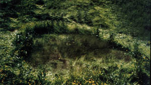

A Pont-Audemer, Eure, 2 personnes rentrant de leur
travail aperçoivent une "soucoupe volante" qui décolle derrière
l'église du village. En s'élevant rapidement, elle émet des rayons lumineux qui éblouissent les témoins. Cet engin
sera vu de nouveau par 1 des 2 personnes au-dessus d'une forêt Aucun autre témoignage et aucune trace derrière l'église ne seront recueillisGEPAN: PAN classé C.
À Jouy-le-Chatel, Seine-et-Marne, 1 témoin observe à
200 m dans le ciel 1 phénomène de forme circulaire estimé à 1 m de diamètre, émettant des faisceaux lumineux.
L'observation dure 5 mn avant que le témoin ne reparte Aucune manœuvre militaire n'a été effectuée sur ce secteur ce jour làGEPAN: PAN classé C.
À Lannion, Côtes d'Armor, des témoins dans leur
véhicule remarquent 2 boules rouges de la grosseur d'un poing au-dessus de la baie. Se rapprochant très
rapidement du véhicule, les boules suivent la voiture même lors d'une accélération. Très lumineuses et laissant
une trainée rouge, elles se rapprochent l'une de l'autre. Se réfugiant chez quelqu'un, toutes les personnes
verront ces boules repartir vers la baie GEPAN: PAN classé D.
A Ampuis, Rhône, 1 fillette se lève pour refermer la
fenètre de sa chambre ouverte par un coup de vent. Elle aperçoit dehors 1 phénomène lumineux dans le ciel à
environ 100 m de son domicile. Ce phénomène est demi-arrondi, dégage une lumière très vive jaune orangée. Il est
stationnaire à environ 150 m du sol. À plusieurs reprises, il va s'éteindre en laissant une lumière allumée à
chaque extrémité. L'observation durera environ 30 mn sans que le phénomène ne touche le sol puis il s'éteindra
définitivement GEPAN: PAN classé C.
À Bressuire, Deux Sèvres, un témoin sur le pas de sa porte observe à 100 m sur le chemin menant
à son domicile 1 lueur éclairant le panneau de signalisation. Aucune voiture et aucun bruit n'est entendu et le
témoin aperçoit alors un phénomène de forme allongée qui avance par saccades à 1,50 m du sol. Le phénomène monte
progressivement et disparaît dans le paysage GEPAN: PAN classé C.
À Saint Ismier, Isère, des gendarmes en patrouille
observent dans le ciel durant une boule lumineuse située au nord-est et se déplaçant lentement.
Cette boule est de couleur jaune et présente des variations d'intensité. Le temps est très clair, la visibilité très
bonne et sans Lune Selon le GEPAN ces personnes ont fait une observation de Vénus, celle-ci étant particulièrement visible (magnitude 4,15) en cette période de l'annéeGEPAN: PAN classé C.
À Athis Mons, Essonne, 1 contôleur aérien en service
observe à sa verticale 1 phénomène cylindrique noir est stationnaire, estimé à 300 m du sol environ, qui fait
ensuite une brusque accélération et disparaît cap à l'est GEPAN: PAN classé C.
À Martigues, Bouches-du-Rhône, plusieurs
personnes observent depuis leur domicile 1 point brillant plus gros qu'une étoile, changeant d'intensité et de
couleur avant de disparaître au nord-ouest Selon le GEPAN ces personnes ont probablement fait une observation astronomique d'Acturus particulièrement visible (magnitude 0,15) en cette période de l'annéeGEPAN: PAN classé B.
la nuit à Apt-Saint Christol, Vaucluse, de nombreux témoins,
militaires, voient à plusieurs reprises des boules lumineuses se déplacer, avec des trajectoires variables, des
disparitions et réapparitions soudaines. Le ciel était très couvert et le temps très orageux. Cette nuit-là, sur les
pentes du Mont Ventoux voisin se déroule une course automobile. Bien que l'enquête ne l'ait pas démontré on peut
envisager sérieusement l'hypothèse de reflets dans la nuit et sur les nuages bas des phares des voitures, les
trajectoires diverses et les apparitions disparitions successives s'expliquant par la topographie du circuit
automobile GEPAN: PAN classé B.
Une trace qui aurait été laissée par un ovni en Australie

George Blackwell, employé de ferme et gardien de White Acres, Rosedate, Victoria, Australie, une propriété de 240 ha, est réveillé par le
bruit que fait le bétail affolé ainsi que par un étrange sifflement aigu. Il se lève pour voir. Il n'y a pas
de vent cette nuit-là, ni de Lune. Le témoin voit un objet en forme de dôme d'environ 4,50 m de haut et large de
7,50 m avec des lumières à son sommet, blanches, bleues et orangées. Il demeure quelque temps en vol stationnaire
au-dessus d'un réservoir d'eau en béton, à environ 400 m de la maison, puis vient se poser 18 m plus loin. Le témoin
enfourche une moto et arrive à moins de 15 m de l'engin. Il n'y a pas d'interférence avec son moyen de locomotion,
mais le sifflement de l'ovni augmente soudainement jusqu'à devenir assourdissant. Il y a un énorme bang, puis la
chose décolle. Au même moment, un souffle d'air chaud manque de jeter le témoin à terre. L'ovni laisse tomber
quelques débris puis file en direction de l'est, à une hauteur du sol ne dépassant pas 30 m. Le témoin va examiner
l'endroit tôt le lendemain matin. Il découvre un cercle d'herbes noircies, aplaties dans le sens contraire des
aiguilles d'une montre. À l'intérieur du cercle se trouve de l'herbe verte, mais les fleurs qui y poussent ont
disparu. Formant une ligne à l'est et à l'extérieur du cercle se trouve une traînée de débris - pierres, mauvaises
herbes et bouses de vaches. Les jours qui suivent l'apparition, le témoin souffrira de maux de tête et de nausées,
et sa montre refusera de fonctionner normalement. En outre, le réservoir au-dessus duquel l'ovni a stationné s'est
vidé de 45 500 l d'eau.
William L. Moore rencontre son informateurFalcon. Lui et Stanton T. Friedman sont
parvenus à interviewer 62 personnes en relation avec l'incident de Roswell, tels que Bill Brazel, Loretta Proctor et Jesse Marcel Junior.